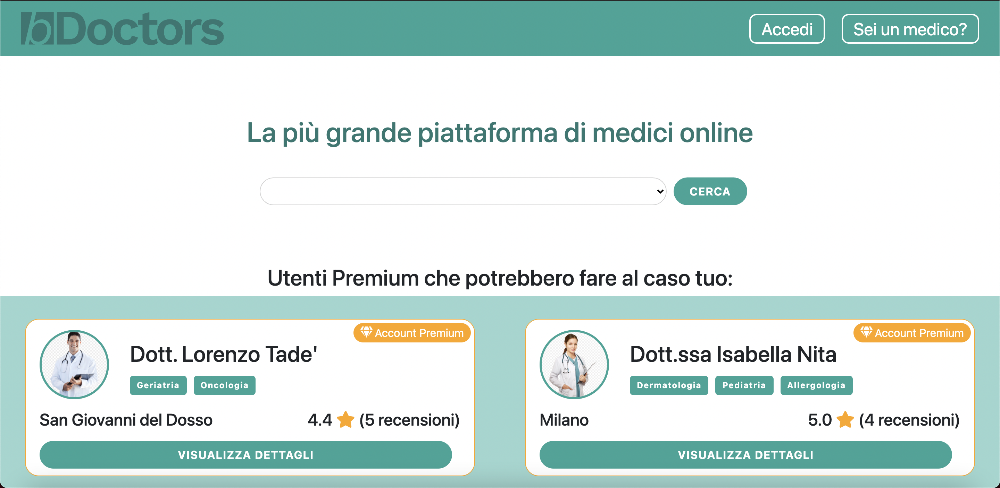
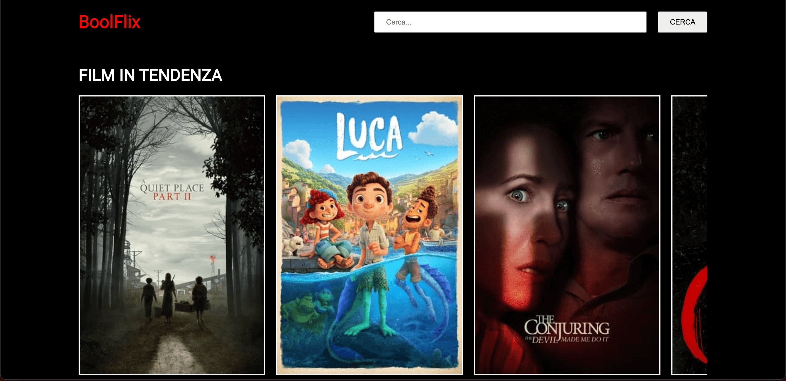
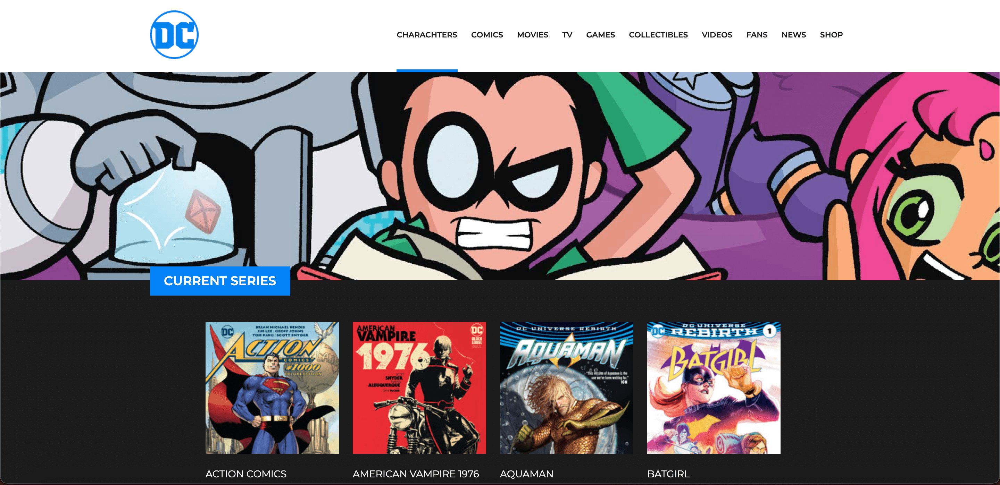
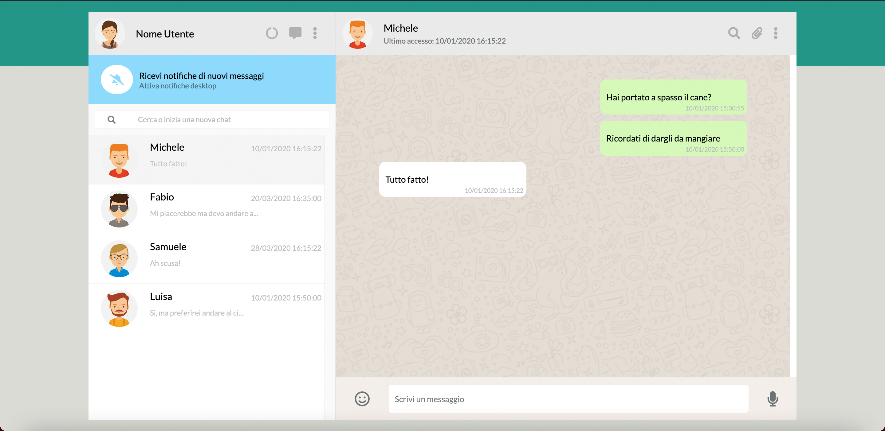
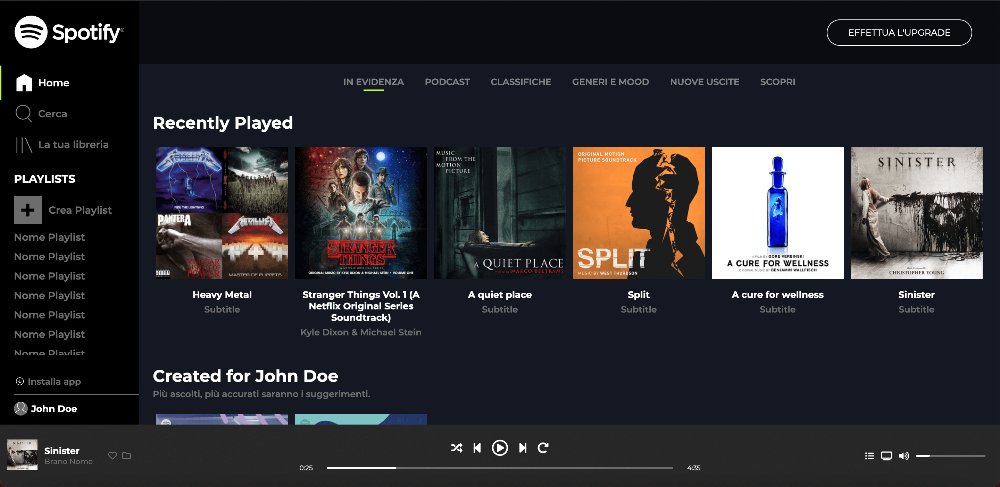
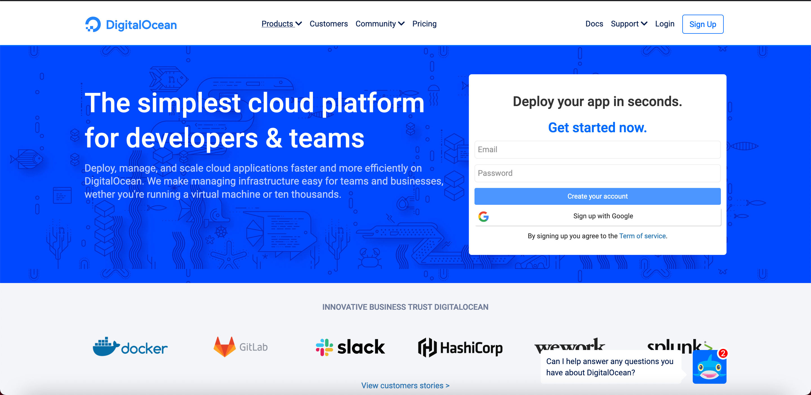
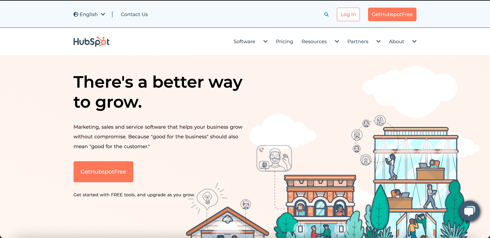
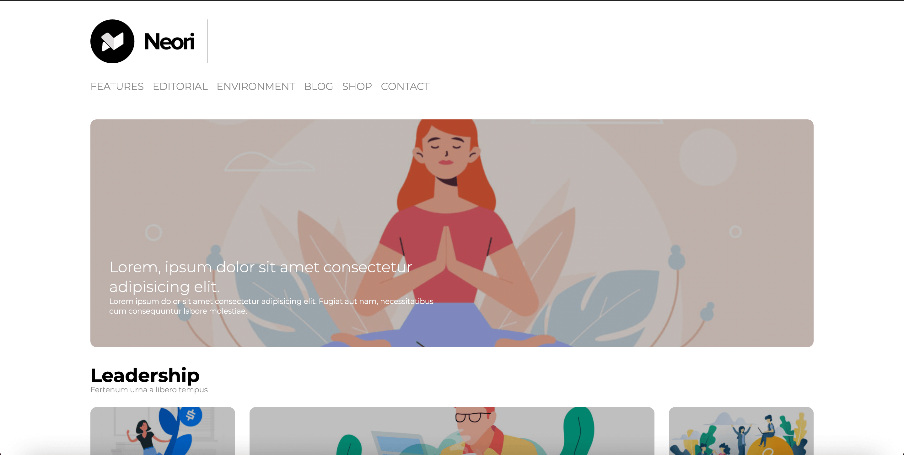

<section id="projects" class="container">

  <div class="text-container">

    <h1>Latest Projects</h1>

    <div class="repo-container">

      <div class="repo">
        
        <h2>bDoctors</h2>
        <p>This is a platform inspired from <a href="https://idoctors.it" target="_blank">iDoctors.it</a> where doctors can create a profile, add curriculum information, services and buy sponsorships to have their profile enhanced. The guest user can search for a doctor by specialization, city and votes average. They can send a message or leave a review.</p>
        <a href="https://github.com/lorenzotade/bdoctors" target="_blank">View the code on GitHub</a>
      </div>
      <div class="repo">
        
        <h2>Netflix</h2>
        <p>This is a web platform inspired from Netflix built with Vue.js and styled with SASS. It has pagination, search option and card like items where details are displayed as the mouse roll over.</p>
        <a href="https://github.com/lorenzotade/vue-boolflix" target="_blank">View the code on GitHub</a>
      </div>
      <div class="repo">
        
        <h2>DC Comics</h2>
        <p>This is a DC Comics website reproduction built with Vue.js and styled with SASS.</p>
        <a href="https://github.com/lorenzotade/vue-dc-comics" target="_blank">View the code on GitHub</a>
      </div>
      <div class="repo">
        
        <h2>WhatsApp Web</h2>
        <p>This is a Whatsapp interactive reproduction built with plain HTML5, CSS3 and JavaScript. You can send messages (you will get a random response), search for contacts and add more, and delete messages.</p>
        <a href="https://github.com/lorenzotade/js-html-css-boolzap" target="_blank">View the code on GitHub</a>
      </div>
      <div class="repo">
        
        <h2>Spotify Web</h2>
        <p>This is platform inspired from Spotify Web built with just HTML and CSS. Fully responsive.</p>
        <a href="https://github.com/lorenzotade/html-css-spotifyweb" target="_blank">View the code on GitHub</a>
      </div>
      <div class="repo">
        
        <h2>DigitalOcean Clone</h2>
        <p>This is a DigitalOcean clone built with just HTML and CSS. Fully responsive.</p>
        <a href="https://github.com/lorenzotade/html-css-digitalocean" target="_blank">View the code on GitHub</a>
      </div>
      <div class="repo">
        
        <h2>HubSpot Clone</h2>
        <p>This is a Hubspot clone built with just HTML and CSS.</p>
        <a href="https://github.com/lorenzotade/htmlcss-hubspot" target="_blank">View the code on GitHub</a>
      </div>
      <div class="repo">
        
        <h2>Fluentify Clone</h2>
        <p>This is a Fluentify clone built with just HTML and CSS.</p>
        <a href="https://github.com/lorenzotade/htmlcss-fluentify" target="_blank">View the code on GitHub</a>
      </div>
      <div class="repo">
        
        <h2>WordPress Theme</h2>
        <p>This is a WordPress theme built with plain HTML and CSS. No frameworks or web tools were used.</p>
        <a href="https://github.com/lorenzotade/htmlcss-wp" target="_blank">View the code on GitHub</a>
      </div>

    </div>

  </div>

</section>
